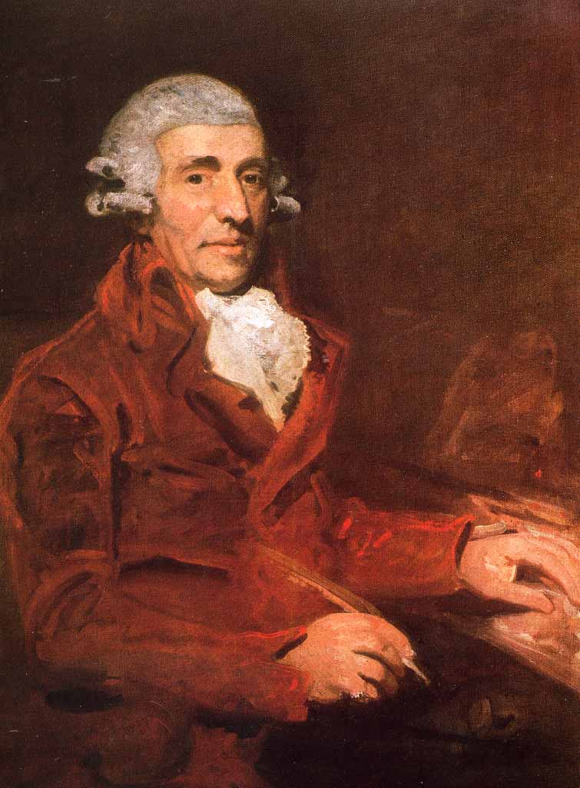
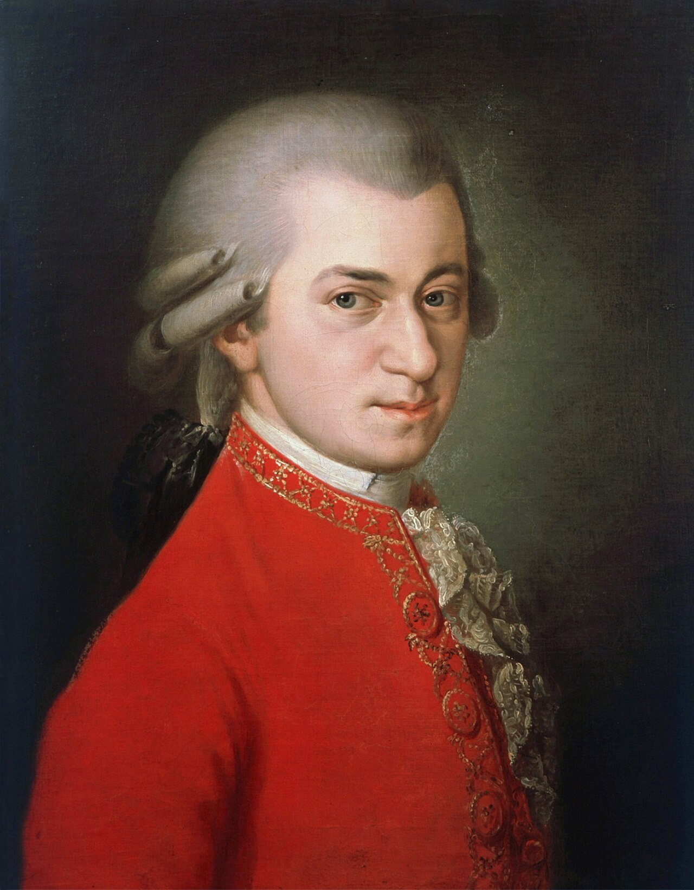
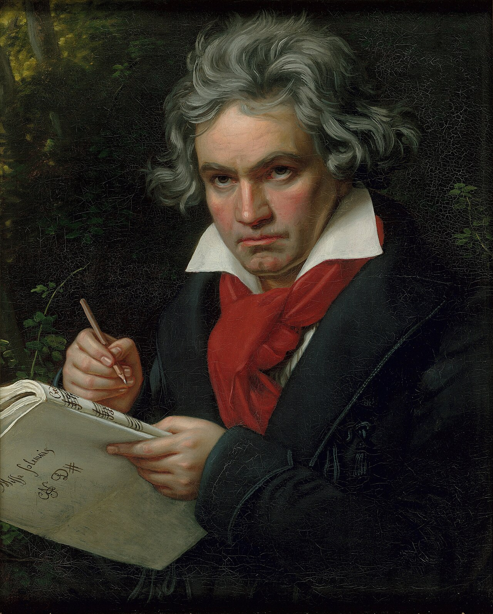

Музыка · 45-бөлім · Вена классиктері Music · Section 45 · Viennese Classics Музыка · Раздел 45 · Венские классики
XVIII ғасырдың аяғы — XIX ғасырдың басы, Вена қаласы. Симфония, соната, квартет пен концерттің негізін қалаған үш ұлы композитор. Late 18th — early 19th century, the city of Vienna. Three great composers who laid the foundations of the symphony, sonata, quartet and concerto. Конец XVIII — начало XIX века, город Вена. Три великих композитора, заложивших основы симфонии, сонаты, квартета и концерта.
Вена классикалық мектебі — КЛАССИЦИЗМ дәуірі (XVIII ғ. аяғы — XIX ғ. басы), орталығы — Вена қаласы. The Viennese Classical School belongs to the era of CLASSICISM (late 18th — early 19th c.), centred on the city of Vienna. Венская классическая школа — это эпоха КЛАССИЦИЗМА (конец XVIII — начало XIX в.), её центр — город Вена.
Үш ұлы композитор — Гайдн, Моцарт, Бетховен — бір қалада, бір дәуірде өмір сүрді. Three great composers — Haydn, Mozart, Beethoven — lived in one city in one era. Три великих композитора — Гайдн, Моцарт, Бетховен — жили в одном городе в одну эпоху.
Олар симфония, соната, квартет пен концерт жанрларының негізін қалады. They laid the foundations of the symphony, sonata, quartet and concerto. Они заложили основы жанров симфонии, сонаты, квартета и концерта.
💡 «Вена классиктері» деген — үш есім: Гайдн, Моцарт, Бетховен. Олар еуропалық музыканың классикалық тілін қалыптастырды. 💡 "The Viennese Classics" means three names: Haydn, Mozart, Beethoven. Together they shaped the classical language of European music. 💡 «Венские классики» — это три имени: Гайдн, Моцарт, Бетховен. Вместе они создали классический язык европейской музыки.

«Симфония мен ішекті квартеттің атасы». Бұл жанрлардың классикалық үлгілерін жасады. The "father of the symphony and the string quartet". He created the classical models of these genres. «Отец симфонии и струнного квартета». Создал классические образцы этих жанров.
😊 Музыкасы — жарқын әзіл-оспаққа толы. 😊 His music is full of bright, light humour. 😊 Его музыка полна светлого юмора.

Австриялық, кереметтей дарынды бала (4 жасынан ойнаған). Опералар («Сиқырлы флейта», «Фигароның үйленуі»), симфониялар, концерттер. An Austrian child prodigy (played from age 4). Operas ("The Magic Flute", "The Marriage of Figaro"), symphonies, concertos. Австриец, чудо-ребёнок (играл с 4 лет). Оперы («Волшебная флейта», «Свадьба Фигаро»), симфонии, концерты.
✨ Музыкасы — кемел, жарқын әрі жеңіл. ✨ His music is perfect, bright and light. ✨ Музыка совершенная, светлая и лёгкая.

Классицизмді романтизммен ұштастырды. 9 симфония (9-шысының финалында «Қуанышқа арналған ода» хоры). Естуінен айырылса да, шығарма жазуын тоқтатпады. United Classicism with Romanticism. 9 symphonies (the 9th ends with the "Ode to Joy" choir). He kept composing even after losing his hearing. Соединил классицизм с романтизмом. 9 симфоний (в финале 9-й — хор «Ода к радости»). Продолжал сочинять, потеряв слух.
⚡ Музыкасы — қуатты әрі қаһармандық. ⚡ His music is mighty and heroic. ⚡ Музыка могучая и героическая.
АйқындықClarityЯсность
♪РеттілікOrderСтройность
♪СимметрияSymmetryСимметрия
♪Соната формасыSonata formСонатная форма
♪🎧 батырманы басып, классиктердің музыкасын тыңдаңыз tap a button and hear the music of the classics нажмите кнопку и послушайте музыку классиков
📌 Классицизм музыкасы — айқын, реттелген, симметриялы; оның негізі — соната формасы (экспозиция → өңдеу → реприза). 📌 The music of Classicism is clear, orderly and symmetrical; it rests on sonata form (exposition → development → recapitulation). 📌 Музыка классицизма — ясная, стройная, симметричная; её основа — сонатная форма (экспозиция → разработка → реприза).